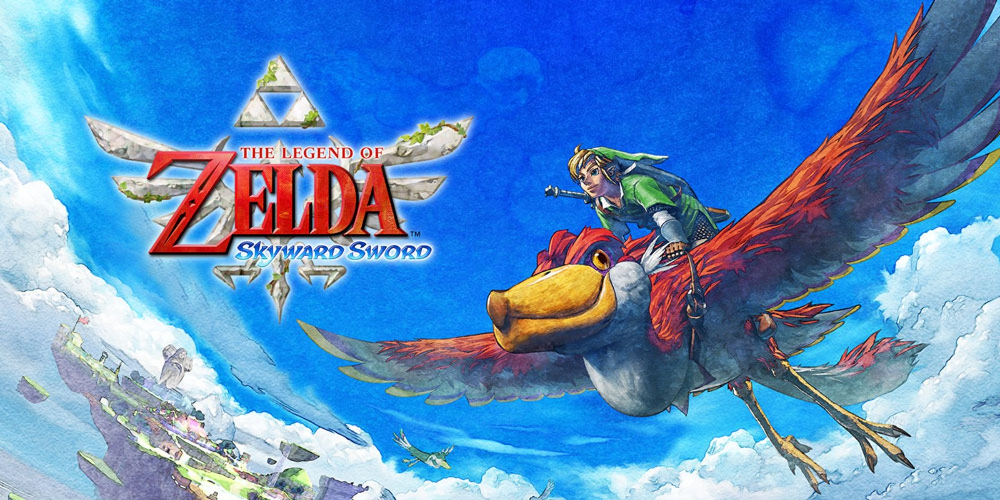
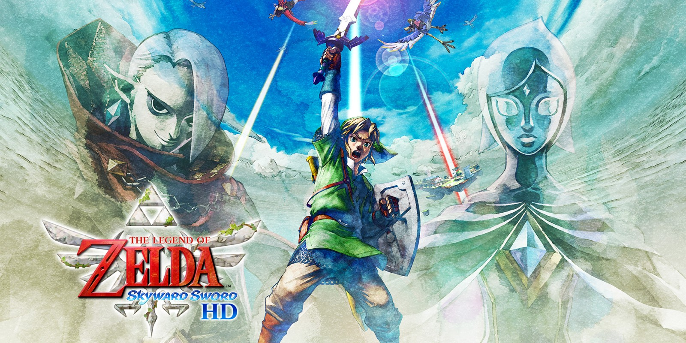

Minha Experiência
Tentei começar o Skyward Sword pelo emulador mas o meu i3 não aguenta — o jogo trava constantemente e a experiência fica impossível. Só consegui ver a área inicial de Skyloft antes de desistir por enquanto.
O que fiz foi assistir o detonado completo do Hiro. Vi o jogo do começo ao fim por vídeo — a história, os templos, os chefes, o arco da Zelda e do Ghirahim. Conheço o Skyward Sword pelo que ele conta, mas ainda não pelo que ele exige de quem joga. É um jogo que está esperando por hardware melhor ou por outra forma de rodar.
Momentos que Ficaram
- [ Ainda não chegou longe o suficiente ]
- [ Ainda não chegou longe o suficiente ]
- [ Ainda não chegou longe o suficiente ]
Dificuldades
O próprio hardware. O emulador não roda bem num i3 — o jogo em si ainda está por vir.
[ Ainda não comecei de verdade — essa frase vai ter que esperar. ]
Em espera — hardware insuficiente